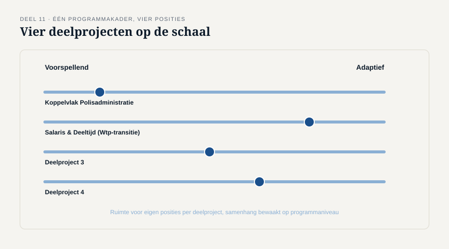

Deel 11 — De analyseaanpak kiezen en verantwoorden
Reader · Ductus-cursus Business-analyse · niveau 2 (professional) · deel 11 van 30
11.1 Waar dit deel over gaat
In niveau 1 koos je, met het benaderingsblad, een aanpak voor één overzichtelijke verandering. Dit deel doet hetzelfde op een schaal waar dat niet meer volstaat: een heel programma, met vier deelprojecten die mogelijk elk een andere aanpak nodig hebben, en waarover je verantwoording moet afleggen aan een formele stuurgroep. Dit is het beginpunt van het kennisgebied Business Analysis Planning and Monitoring (BAPM), dat in dit niveau over twee delen wordt uitgewerkt — dit deel over de aanpak zelf, deel 12 over de governance eromheen.
Aan het eind van dit deel kun je:
- een analyseaanpak voor een heel programma opstellen, inclusief ruimte voor verschillende deelaanpakken;
- vaststellen hoe de voortgang van de analyse zelf gemonitord wordt, los van de voortgang van de bouw;
- een aanpak verantwoorden aan een stuurgroep op een manier die standhoudt bij kritische vragen;
- met het aanpakblad dit alles in samenhang vastleggen.
11.2 De casus: Iris’ zorg
Uit het casusdossier: Iris Tanghe vreest dat het programma de fouten van WGP 2.0 op grotere schaal herhaalt.
Merel krijgt van Iris de vraag om een analyseaanpak voor het hele programma op te stellen, vóór de vier deelprojecten goed en wel beginnen.
“Ik wil niet dat elk deelproject zijn eigen ding doet en dat we er over een half jaar achter komen dat niemand hetzelfde bedoelt met ‘behoefte’ of ‘belanghebbende’.”
“Dus je wilt één vaste aanpak voor alle vier?”
“Nee — dat is ook niet reëel. Koppelvlak Polisadministratie is heel anders dan Salaris & Deeltijd. Ik wil dat er per deelproject bewust gekozen wordt, met dezelfde taal en dezelfde manier van verantwoorden.”
Dit is een subtiel maar belangrijk punt: Iris vraagt niet om uniformiteit in de gekozen aanpak, maar om uniformiteit in hoe die keuze gemaakt en verantwoord wordt. Dat onderscheid — hetzelfde proces, niet noodzakelijk hetzelfde resultaat — is de kern van dit deel.
11.3 Van één verandering naar een heel programma
Het benaderingsblad uit niveau 1, deel 4, koos een aanpak voor één verandering, met vijf situationele factoren. Die factoren blijven relevant, maar op programmaschaal komt er iets bij: de vier deelprojecten kunnen onderling verschillen op precies die factoren.
- Koppelvlak Polisadministratie raakt een stabiel, goed gedocumenteerd systeem met een bekende, redelijk voorspelbare behoefte — een kandidaat voor een meer voorspellende aanpak.
- Salaris & Deeltijd raakt een gebied waar de Wtp-transitie de regels nog kan laten schuiven — een kandidaat voor een adaptievere aanpak, met kortere cycli en ruimte om bij te sturen.
Een programma-brede analyseaanpak moet daarom twee dingen tegelijk doen: ruimte laten voor verschillende deelaanpakken per deelproject, en samenhang bewaken zodat die verschillende aanpakken elkaar niet in de weg zitten of, erger, stilzwijgend van elkaar afwijkende aannames opleveren.

11.4 Welke technieken, en waarom
Een analyseaanpak is meer dan een positie op de schaal voorspellend-adaptief. Zij benoemt ook expliciet welke technieken worden ingezet, en waarom — niet als uitputtende methodehandleiding, maar als een gedeeld beeld tussen de drie analisten (Merel, Sander, Femke) en de architectuur- en datalijn.
Denk aan: welke elicitatietechnieken (deel 6 uit niveau 1, uitgebreid in deel 14) passen bij welk deelproject; hoe requirements worden vastgelegd en beheerd zodat ze onderling vergelijkbaar zijn; welke modelleervormen (proces, data, regels — deel 18) worden gebruikt en in welke notatie, zodat Sander en Femke niet ieder hun eigen conventie verzinnen.
Dit is geen bureaucratische exercitie. Het voorkomt een specifiek risico dat in niveau 1 nog niet kon spelen: dat twee analisten, elk voor zich zorgvuldig, tot onderling onvergelijkbare of zelfs tegenstrijdige documentatie komen — precies het risico dat Iris benoemt.
11.5 Monitoren: de voortgang van de analyse, niet van de bouw
Een programma bewaakt doorgaans nauwgezet de voortgang van de bouw: opgeleverde functionaliteit, testresultaten, planning. De voortgang van de analyse zelf krijgt vaak geen apart zicht — met als risico dat pas zichtbaar wordt dat de analyse achterloopt op het moment dat de bouw erop moet wachten.
Bruikbare indicatoren voor de voortgang van analysewerk, te onderscheiden van bouwvoortgang:
- Percentage belanghebbenden geraadpleegd ten opzichte van de belanghebbendenkaart.
- Percentage behoeften gevalideerd (tegencheck uitgevoerd, zoals in niveau 1 deel 6) ten opzichte van geëliciteerde behoeften.
- Doorlooptijd tussen het signaleren van een openstaande vraag en het beantwoorden ervan.
- Aantal openstaande aannames die nog niet zijn getoetst (context, zoals in niveau 1 deel 9).
Deze indicatoren zeggen niets over of de oplossing goed wordt gebouwd. Ze zeggen iets over of de analyse zélf op koers ligt — en dat is precies het soort signaal dat er bij WGP 2.0 nooit was, op geen enkele schaal.
11.6 Verantwoorden aan de stuurgroep
Een programmastuurgroep, met meerdere directieleden, stelt andere vragen dan een individuele opdrachtgever. Verantwoording op dit niveau moet drie dingen kunnen laten zien:
- Waarom deze aanpak per deelproject, met een verwijzing naar de situationele factoren — niet “omdat we dat gewend zijn”, de fout uit niveau 1, deel 4.
- Hoe de vier deelprojecten op elkaar aansluiten, met name op de raakvlakken (het koppelvlak met de polisadministratie raakt zowel Indienst & Uitdienst als Salaris & Deeltijd).
- Welk signaal de stuurgroep zou doen ingrijpen als de analyse zelf achterloopt — een variant van het afbreekcriterium uit niveau 1, deel 9, nu toegepast op het analyseproces in plaats van op de uiteindelijke oplossing.
11.7 De werkvorm: het aanpakblad
Het instrument van dit deel is het aanpakblad: een programmabreed document dat de aanpak per deelproject vastlegt, de gekozen technieken benoemt, de monitoring inricht, en de verantwoordingslijn expliciet maakt.
Het blad
Per deelproject: positie op de schaal voorspellend-adaptief, met verwijzing naar de situationele factoren uit niveau 1, deel 4. Gekozen technieken, en waarom, met het oog op vergelijkbaarheid tussen deelprojecten. Monitoringindicatoren voor de analyse zelf, apart van bouwvoortgang. Verantwoordingslijn: wie rapporteert wanneer, aan wie, en met welk detailniveau.
Het veld dat het verschil maakt
Wat doen we als de aanpak zelf niet blijkt te werken — welk signaal, en wie beslist over bijsturen?
Dit veld tilt het afbreekcriterium uit niveau 1 naar een nieuw niveau: niet de oplossing zelf, maar de manier van werken eraan wordt hier vooraf getoetst op een omslagpunt. Zonder dit veld ontdek je pas halverwege het programma, wanneer twee deelprojecten al maanden langs elkaar heen hebben gewerkt, dat de gekozen aanpak niet functioneerde — precies het scenario dat Iris vreest.

11.8 Terug naar de casus
Iris’ zorg — dat het programma de fouten van WGP 2.0 vier keer tegelijk zou herhalen — wordt met dit deel niet weggenomen door één uniforme aanpak op te leggen, wat een nieuwe, andere fout zou zijn (dezelfde vermenging van “gewoonte” en “afweging” als in niveau 1, deel 4, nu op programmaniveau). Zij wordt weggenomen door een gedeeld proces: elk deelproject kiest zijn eigen positie, bewust en verantwoord, binnen een kader dat samenhang en tijdige bijsturing bewaakt.
Vooruit naar deel 12. Een gekozen aanpak is niet voldoende als de besluiten die eruit voortvloeien nergens herleidbaar worden vastgelegd — vooral niet wanneer die besluiten ook de architectuurlijn raken. Deel 12 gaat over governance, informatiebeheer, en het gedeelde besluitenlogboek met Bram Wolfslag.